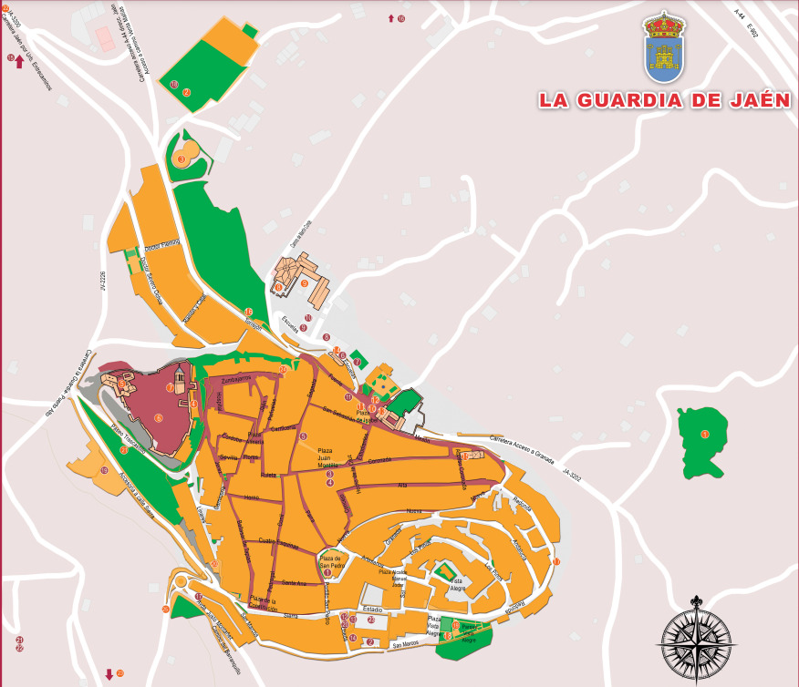

MAPA TURÍSTICO
Este mapa detallado y colorido, resalta los principales monumentos y sitios de interés de La Guardia de Jaén, sirviendo como guía visual para los visitantes.
Destaca la Iglesia de San Pedro, un templo central de arquitectura tradicional andaluza, junto a plazas como la de San Pedro y la de la Constitución, marcadas en tonos naranjas para las zonas históricas y peatonales. También se señalan el Antiguo Convento de Santo Domingo, el Lavadero Público de la II República y el conjunto histórico Plaza Isabel II, todos representados como puntos clave del patrimonio local. Áreas recreativas y naturales rodean el núcleo urbano, ofreciendo vistas panorámicas, mientras carreteras grises y negras facilitan el acceso. Los símbolos rojos indican museos, ermitas y otros lugares históricos.
